Advanced Materials of Python
Table of Contents
1 Python套件管理
Python的一大優勢之一便是龐大的第三方函式庫，讓使用python的程式設計師可以方便的呼叫、進行如網路資料下載解析、資料的視覺化、甚或是大數據的複雜分析與人工智慧的balabala….，目前用來管理這些龐大套件的工具主要有二：pip與Conda。
1.1 pip v.s. conda
1.1.1 pip
- Python packages only.
- Compiles everything from source. EDIT: pip now installs binary wheels, if they are available.
- Blessed by the core Python community (i.e., Python 3.4+ includes code that automatically bootstraps pip).
1.1.2 conda
- Python agnostic. The main focus of existing packages are for Python, and indeed Conda itself is written in Python, but you can also have Conda packages for C libraries, or R packages, or really anything.
- Installs binaries. There is a tool called conda build that builds packages from source, but conda install itself installs things from already built Conda packages.
- External. Conda is the package manager of Anaconda, the Python distribution provided by Continuum Analytics, but it can be used outside of Anaconda too. You can use it with an existing Python installation by pip installing it (though this is not recommended unless you have a good reason to use an existing installation).
1.1.3 In both cases:
- Written in Python
- Open source (Conda is BSD and pip is MIT)
1.2 Conda, Anaconda, Minconda1
1.2.1 difference between conda, anaconda, and miniconda 2
- conda is both a command line tool, and a python package.
- Miniconda installer = Python + conda
- Anaconda installer = Python + conda + meta package anaconda
- conda is an environment manager and a package manager. It means the tool itself. conda makes it possible to
- install package with conda install flake8
- create an environment with any version of Python with conda create -n myenv python=3.6
- install package with conda install flake8
- conda is not a binary command, is a Python package. To make conda work, you have to create a Python environment and install package conda into it. This is where Anaconda installer and Miniconda installer comes in.
- Installer Minoconda installs a Python and the package conda. Installer Anaconda not only does what Miniconda does, it also install a meta Python package named anaconda for you.
不一定要安裝Anaconda或Miniconda，也可透過pip直接安裝conda
pip install conda
1.2.2 conda、miniconda、anaconda的區別3
- conda是一種通用包管理系統，旨在構建和管理任何語言和任何類型的軟件。舉個例子：包管理與pip的使用類似，環境管理則允許用戶方便地安裝不同版本的python並可以快速切換。
- Anaconda則是一個打包的集合，裡面預裝好了conda、某個版本的python、眾多packages、科學計算工具等等，就是把很多常用的不常用的庫都給你裝好了。
- Miniconda，顧名思義，它只包含最基本的內容——python與conda，以及相關的必須依賴項，對於空間要求嚴格的用戶，Miniconda是一種選擇。就只包含最基本的東西，其他的庫得自己裝。
1.3 conda
Conda 是一個開源的跨平台工具軟體，它被設計作為 Python、R、Lua、Scala 與 Java 等任何程式語言的套件、依賴性以及工作環境管理員，特別受到以 Python 作為主要程式語言的資料科學團隊所喜愛。傳統 Python 使用者以 pip 作為套件管理員（package manager）、以 venv 作為工作環境管理員（environment manager），而 conda 則達成了「兩個願望、一次滿足」既可以管理套件亦能夠管理工作環境。在這個小節我們介紹如何使用 conda 最重要的幾個核心功能，讓資料科學團隊重現指定的工作環境設定。4
1.3.2 常見 conda 指令
- conda –version 檢視 conda 版本
- conda update PACKAGENAME更新指定套件
- conda –help 檢視 conda 指令說明文件
- conda list –ENVIRONMENT 檢視指定工作環境安裝的套件清單
- conda install PACAKGENAME=MAJOR.MINOR.PATCH 在目前的工作環境安裝指定套件
- conda remove PACKAGENAME 在目前的工作環境移除指定套件
- conda create –name ENVIRONMENT python=MAIN.MINOR.PATCH 建立新的工作環境且安裝指定 Python 版本
- conda activate ENVIRONMENT 切換至指定工作環境
- conda deactivate 回到 base 工作環境
- conda env export –name ENVIRONMENT –file ENVIRONMENT.yml 將指定工作環境之設定匯出為 .yml 檔藉此複製且重現工作環境
1.4 python package安裝
1.4.1 安裝package:
conda install packageName
1: conda install pandas
1.4.2 移除package:
conda remove packageName
1: conda remove pandas
1.4.3 安裝特定版本python
conda install python=version
1: conda install python=3.5
1.4.4 了解目前系統可用套件
conda list
1.5 python執行環境建立與維護5
1.5.1 建立虛擬環境
conda create -n envName
1: conda create -n myDLProject
Collecting package metadata (current_repodata.json): ...working... done Solving environment: ...working... done ## Package Plan ## environment location: /Users/letranger/.conda/envs/myDLProject Proceed ([y]/n)? Preparing transaction: ...working... done Verifying transaction: ...working... done Executing transaction: ...working... done # # To activate this environment, use # # $ conda activate myDLProject # # To deactivate an active environment, use # # $ conda deactivate
1.5.2 啟用某個虛擬環境
source activate envName
1: source activate myDLProject
1.5.3 退出某個虛擬環境
source deactivate
1: source deactiveate
1.5.4 刪除某個虛擬環境
conda env remove -n envName
1: conda env remove -n myDLProject
1.5.5 列出目前系統中所有的虛擬環境
conda env list
2 Numpy模組
2.1 匯入模組
- 使用模組裡的函式要加模組名稱，如 numpy.arrry( )。例：
import numpy - 匯入numpy模組並使用np作為簡寫，這是Numpy官方倡導的寫法
import numpy as np - Numpy中的多維資料型別稱為ndarray
2.2 Create ndarray
2.2.1 一維陣列
- list 或 tuple 轉入
1: import numpy as np 2: np1 = np.array( [1, 2, 3, 4] ) 3: print(np1)
[1 2 3 4]
- 使用 np.arange( ) 方法
1: import numpy as np 2: np2 = np.arange(5) 3: print(np2)
[0 1 2 3 4]
2.2.2 多維陣列
- 二維陣列
1: import numpy as np 2: np4 = np.array( [[1, 2, 4], [3,4,5]]) 3: print('np4:', np4) 4: 5: np5 = np.array([np.arange(3), np.arange(3)]) 6: print('np5:', np5) 7: 8: np6 = np.arange(8).reshape(2, 4) 9: print('np6:', np6)
np4: [[1 2 4] [3 4 5]] np5: [[0 1 2] [0 1 2]] np6: [[0 1 2 3] [4 5 6 7]]
- 多維陣列
1: import numpy as np 2: 3: np7 = np.arange(24).reshape(2, 3, 4) 4: print('np7:',np7)
np7: [[[ 0 1 2 3] [ 4 5 6 7] [ 8 9 10 11]] [[12 13 14 15] [16 17 18 19] [20 21 22 23]]]
- 隨機矩陣
1: import numpy as np 2: 3: np8 = np.random.random( (3, 2)) #矩陣大小以tuple表示 4: print('np8:', np8) 5: 6: np9 = np.random.randint( 0, 100, size=[4, 3]) #矩陣大小以list表示 7: print('np9:', np9)
np8: [[0.04349769 0.48755705] [0.50627204 0.56730179] [0.56445113 0.31159334]] np9: [[53 73 52] [60 58 33] [69 89 98] [17 92 90]]
2.3 矩陣運算
1: import numpy as np 2: 3: A = np.array([ 4: [5, 3, 7], 5: [0, 1, -6] 6: ]) 7: 8: B = np.array([ 9: [1, 2, 3], 10: [-1, -2, -3] 11: ]) 12: 13: C = np.array([ 14: [1, 2], 15: [-1, -2], 16: [0, 5] 17: ]) 18: 19: k = -3 20: 21: print('---A+B---\n', A+B) 22: print('---A-B---\n', A-B) 23: print('---k*B---\n', k*B) 24: print('---A.dot(C)---\n', A.dot(C))
---A+B--- [[ 6 5 10] [-1 -1 -9]] ---A-B--- [[ 4 1 4] [ 1 3 -3]] ---k*B--- [[-3 -6 -9] [ 3 6 9]] ---A.dot(C)--- [[ 2 39] [ -1 -32]]
2.4 特殊矩陣
- 元素全為0矩陣：
np.zeros(<大小>, <資料型別>) - 元素全為1矩陣：
np.ones(<大小>, <資料型別>) # 矩陣大小以 tuple 指定 - 單位矩陣(Identity)：
np.eye(<m>, <資料型別>) # eye 與 I 同音 - 反矩陣(Inverse)：
np.linalg.inv(<矩陣>) # 行列式不可為0
1: import numpy as np 2: 3: print('np.zeros:\n', np.zeros((3,5), dtype='int')) 4: print('np.ones:\n', np.ones((3,5), dtype='int')) 5: print('np.eyes:\n', np.eye(4, dtype='int')) 6: x = np.random.randint( 0, 10, size=[3, 3]) 7: print('x:\n', x) 8: xt = x.T # 轉置 9: print('xt:\n', xt) 10: mat = xt.dot(x) 11: print('mat:\n', mat) 12: print('np.linalg.inv(mat):\n', np.linalg.inv(mat)) 13:
np.zeros: [[0 0 0 0 0] [0 0 0 0 0] [0 0 0 0 0]] np.ones: [[1 1 1 1 1] [1 1 1 1 1] [1 1 1 1 1]] np.eyes: [[1 0 0 0] [0 1 0 0] [0 0 1 0] [0 0 0 1]] x: [[5 7 1] [2 8 6] [1 6 3]] xt: [[5 2 1] [7 8 6] [1 6 3]] mat: [[ 30 57 20] [ 57 149 73] [ 20 73 46]] np.linalg.inv(mat): [[ 0.48628827 -0.37053571 0.37659439] [-0.37053571 0.3125 -0.33482143] [ 0.37659439 -0.33482143 0.38934949]]
2.5 ndarray屬性
- dtype：ndarray每個元素的資料型別 (可於創建矩陣時同時指定)
- int, float, bool, D(複數)
- int, float, bool, D(複數)
- ndim：ndarray的維度
- shape：ndarray的大小，即矩陣 m*n ( m 列 n 行 )
- size：ndarray的元素個數
- itemsize：ndarray中每個元素記憶體大小(單位byte)
1: import numpy as np 2: 3: np1 = np.arange(12, dtype='D').reshape(3, 2, 2) 4: print(np1) 5: print('dtype=', np1.dtype) 6: print('shape=', np1.shape) 7: print('size=', np1.size) 8: print('itemsize=', np1.itemsize) 9: print('nbytes=', np1.nbytes)
[[[ 0.+0.j 1.+0.j] [ 2.+0.j 3.+0.j]] [[ 4.+0.j 5.+0.j] [ 6.+0.j 7.+0.j]] [[ 8.+0.j 9.+0.j] [10.+0.j 11.+0.j]]] dtype= complex128 shape= (3, 2, 2) size= 12 itemsize= 16 nbytes= 16.0
- nbytes：ndarray的記憶體大小(單位byte)
- real 和 imag：複數的實部和虛部
- real 回傳複數的實部
- real 和 imag：複數的實部和虛部
- imag 回傳複數的虛部
- T：矩陣轉置
2.5.1 練習
- 使用 random 函式產生 3*5 的矩陣 A
- 使用 randint 函式產生 5*3 的矩陣 B
- 使用 arange 和 reshape 函式產生 3*5 的矩陣 C
- 使用 list 自建 5*3 的矩陣 D
- 計算 10*A + C 和 B - D
- 計算 B•C 和 C•D
- 比較 (B•C)T 和 CT•BT 是否相同?
- 求矩陣 E 的反矩陣
2.6 矩陣形狀轉換
- reshape(m, n, …)：不改變原矩陣形狀
- resize(m, n, …)：和 reshape 類似，但會改變原矩陣形狀
- ravel( ) / flatten( )：將多維矩陣轉換成一維矩陣，原矩陣不變
- shape = (m, n, …)：用 tuple 來指定矩陣大小，會改變原矩陣
1: import numpy as np 2: a = np.arange(12) 3: print(a) 4: print(a.reshape(3,4)) 5: print(a) 6: print(a.resize(3,4)) 7: print(a) 8: print(a.flatten()) 9: print(a) 10: a.shape = (2, 6) 11: print(a)
[ 0 1 2 3 4 5 6 7 8 9 10 11] [[ 0 1 2 3] [ 4 5 6 7] [ 8 9 10 11]] [ 0 1 2 3 4 5 6 7 8 9 10 11] None [[ 0 1 2 3] [ 4 5 6 7] [ 8 9 10 11]] [ 0 1 2 3 4 5 6 7 8 9 10 11] [[ 0 1 2 3] [ 4 5 6 7] [ 8 9 10 11]] [[ 0 1 2 3 4 5] [ 6 7 8 9 10 11]]
2.7 矩陣疊加
- 水平疊加：np.hstack( <tuple, list> )
1:
- 垂直疊加：np.vstack( <tuple, list> )
1:
- 深度疊加：np.dstack( <tuple, list> )
以此例，a, b原為2*6矩陣，
深度疊加後變成2*6*2矩陣。
1: import numpy as np 2: a = np.arange(12).reshape(2, 6) 3: b = a * 2 4: 5: print(a) 6: print(b) 7: 8: print(np.hstack([a, b])) 9: print(np.vstack([a, b])) 10: print(np.dstack([a, b]))
[[ 0 1 2 3 4 5] [ 6 7 8 9 10 11]] [[ 0 2 4 6 8 10] [12 14 16 18 20 22]] [[ 0 1 2 3 4 5 0 2 4 6 8 10] [ 6 7 8 9 10 11 12 14 16 18 20 22]] [[ 0 1 2 3 4 5] [ 6 7 8 9 10 11] [ 0 2 4 6 8 10] [12 14 16 18 20 22]] [[[ 0 0] [ 1 2] [ 2 4] [ 3 6] [ 4 8] [ 5 10]] [[ 6 12] [ 7 14] [ 8 16] [ 9 18] [10 20] [11 22]]]
2.8 ndarray 轉 list
- ndarray 轉 list
1: import numpy as np 2: a = np.arange(12).reshape(4, 3) 3: print(a) 4: b = a.tolist() 5: print(b)
[[ 0 1 2] [ 3 4 5] [ 6 7 8] [ 9 10 11]] [[0, 1, 2], [3, 4, 5], [6, 7, 8], [9, 10, 11]]
2.9 Numpy常用統計函數
- np.sum(<np>)：回傳和
- np.mean(<np>)：回傳平均值
- np.max(<np>)：回傳最大值
- np.min(<np>)：回傳最小值
- np.ptp(<np>)：回傳最大值減最小值
- np.std(<np>)：回傳標準差
- np.var(<np>)：回傳變異數
- np.cumsum(<np>)：回傳累加值
- np.cumprod(<np>)：回傳累積值
註：使用時需要指定axis軸的方向，若不指定，預設統計整個numpy
3 Matplotlib
3.1 Matplotlib簡介
- NumPy的可視化操作界面
- 為Python最多人使用的2D繪圖工具
- 優點：圖形美觀、類型多、相容於Matlab
- 官方社群網站 https://matplotlib.org/
- 維基百科 https://zh.wikipedia.org/wiki/Matplotlib
3.2 折線圖
3.2.1 基本語法
- import matplotlib.pyplot as plt
- plt.plot( )函式為matplotlib.pyplot模組畫線條方法，其語法如下
plt.plot( [x座標資料,] y座標資料 [, 參數1, 參數2, ...] ) - np.sin( )函式為Numpy模組求正弦值
- plt.show( )函式用來顯示圖形
1: import matplotlib.pyplot as plt 2: import numpy as np 3: 4: x = np.arange(-3, 3, 0.01) 5: plt.clf() 6: plt.plot(x, np.sin(x)) 7: # for web-based 8: #plt.show() 9: 10: plt.savefig('SimpleSin.png', dpi=300)

Figure 1: 簡單的sin圖形
3.2.2 練習一：繪製折線圖
利用 list 繪製
x1 = [1, 2, 3, 4, 5, 6]
y1 = [1, 2, 3, 4, 5, 6]
執行 plt.plot(y1) 和 plt.plot(x1, y1) 有何差別??
利用 numpy 繪製
x2 = np.arange(0, 3, 0.01)
執行plt.plot(x2, x2**2)看看畫出什麼圖形??
3.2.3 圖形美化: plot() function
- plot()函式參數可分為兩類：fmt字串 和 kwarg參數
- fmt 定義基本格式：顏色、標記、線條樣式
- kwarg 為Line2D屬性(參考資料)：color, linestyle, marker, label, linewidth, ….
- 若 fmt 和 kwarg 設定衝突時，以 kwarg 為主
- plot(): fmt字串
字元 顏色 字元 標記 字元 標記 ‘b’ 藍 '.' 點 ‘*’ * ‘g’ 綠 'o' 圓圈 ‘+’ + ‘r’ 紅 'v’ 三角形(下) ‘x’ x ‘c’ 青 '^' 三角形(上) ‘d’ 鑽石 ‘m’ 洋紅 ‘<’ 三角形(左) 字元 線條 ‘y’ 黃 ‘>’ 三角形(右) ‘-’ 實線 ‘k’ 黑 ‘s’ 正方形 ‘–’/':' 虛線 ‘w’ 白 ‘p’ 五邊形 ‘-.’ -.-.-.-. - fmt 定義基本格式：顏色、標記、線條樣式
- kwgarg參數
- colorg
- 單字，如g：color = ‘lime’
- 字母，如g：color = ‘k’
- 色碼，如g：color = ‘#FF0000’
- RGB值(0~g1之間)，如：color = (1, 0, 0)
- 單字，如g：color = ‘lime’
- label：g呈現線條標籤，如 label = ‘y = x2'
- 需搭配 pglt.legend()函式方能呈現 label
- 需搭配 pglt.legend()函式方能呈現 label
- colorg
- 色彩對照
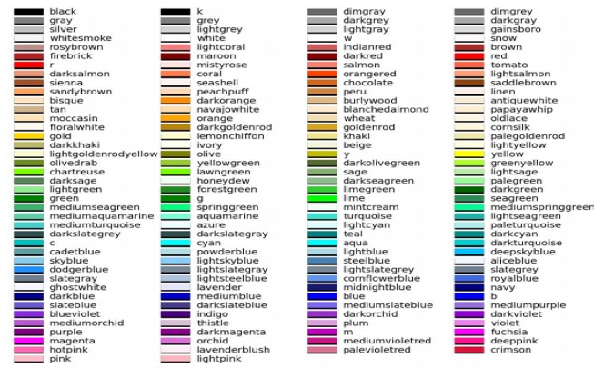
Figure 2: 色表
1: import matplotlib.pyplot as plt 2: import numpy as np 3: 4: x1 = [1, 2, 3, 4, 5, 6] 5: y1 = [1, 2, 3, 4, 5, 6] 6: plt.clf() 7: plt.plot(x1, y1, color='c', linestyle='-', marker='p') 8: plt.savefig('line1.png', dpi=300) 9: 10: x2 = np.arange(0, 3, 0.01) 11: x3 = np.arange(8).reshape(2, 4) 12: 13: plt.plot(y1, 'c-p', x2, x2**2, x3, x3+3, '-*') 14: plt.savefig('line2.png', dpi=300)
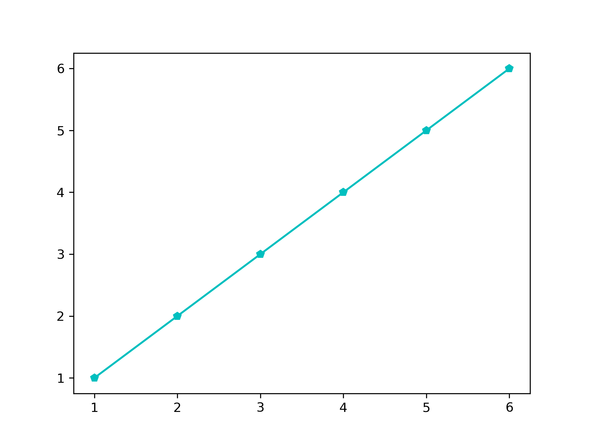
Figure 3: 簡單的折線圖形#1
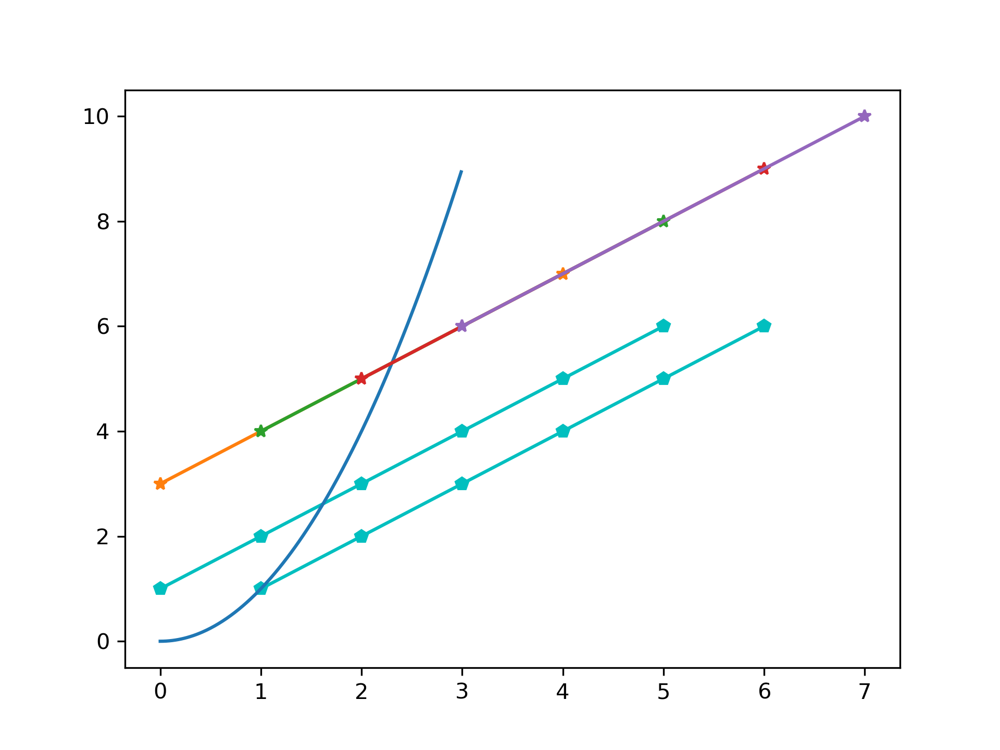
Figure 4: 簡單的折線圖形2
- 其他參數
- x / y 座標範圍：plt.xlim(起始值, 終止值) / plt.ylim(起, 止)
- 圖表標題：plt.title(字串)
- x / y 座標標題：plt.xlabel(字串) / plt.ylabel(字串)
- 顯示kwarg參數裡的label：plt.legend()
- x / y 座標範圍：plt.xlim(起始值, 終止值) / plt.ylim(起, 止)
3.3 bar chart: plt.bar()
3.3.1 語法
plt.bar( x座標資料, y座標資料 [, 參數1, 參數2, ...] )
3.4 pie chart: plt.pie()
3.4.1 語法：
plt.pie( 比例列表 [, 參數1, 參數2, …] )
3.4.2 參數：
- colors：各子圖顏色，多以 list 表示
- labels：各子圖標籤，多以 list 表示
- explode：各子圖分離突出比例，0.1代表分離10%，多以 list 表示
- autopct：顯示各子圖比例值，格式為%x.y%%
- startangle：繪製起始角度，預設為0 (與三角函數角度相同)
- 若要以正圓形繪製，請再加上plt.axis('equal')
3.4.3 範例
1: import matplotlib.pyplot as plt 2: import numpy as np 3: 4: parts = [35.35, 23, 26.65, 15] 5: labels = ['Harrison', 'Vanessa', 'James', 'Ruby'] 6: colors = ['red', 'lightblue', 'purple', 'yellow'] 7: explodes = [0.1, 0, 0, 0.1] 8: plt.pie(parts, colors = colors, labels = labels, explode = explodes, autopct = '%3.2f%%') 9: plt.axis('equal') 10: plt.legend() 11: 12: #plt.show() 13: plt.savefig('simplePie.png', dpi=300)
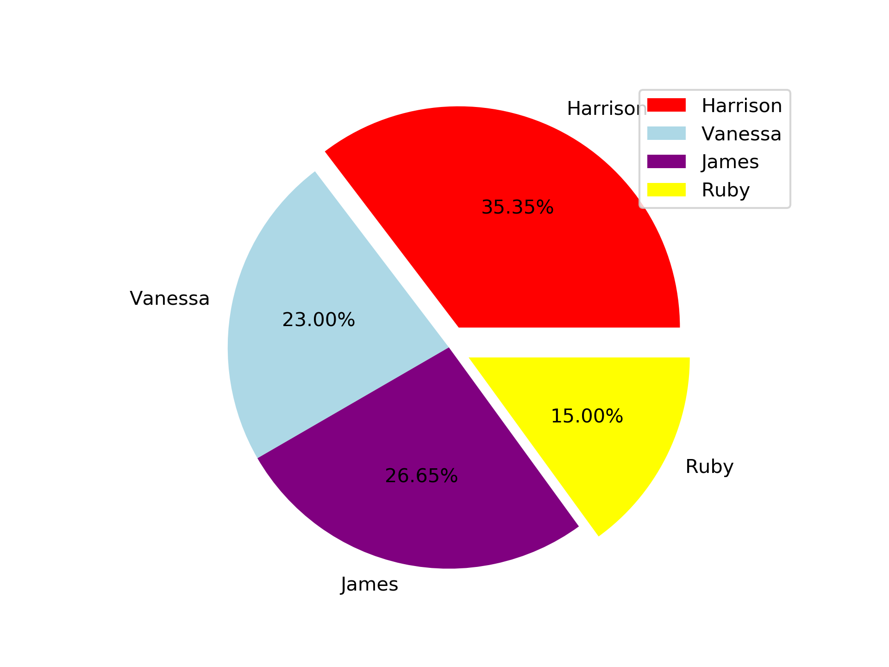
Figure 5: 簡單的pie chart
3.6 文字註解: plt.text()
3.6.1 語法
plt.text( x相對座標, y相對座標 , 文字字串 [, 其它參數] )- 參考資料
3.6.2 範例
1: import matplotlib.pyplot as plt 2: 3: x = [1, 2, 3, 4, 5, 6, 7, 8] 4: y = [1, 4, 9, 16, 25, 36, 49, 64] 5: plt.plot(x, y, 'r--') 6: for x, y in zip(x, y): 7: plt.text(x-0.2, y+0.6, '(%d, %d)' %(x, y)) 8: #plt.show() 9: plt.savefig('simpleText.png', dpi = 300)
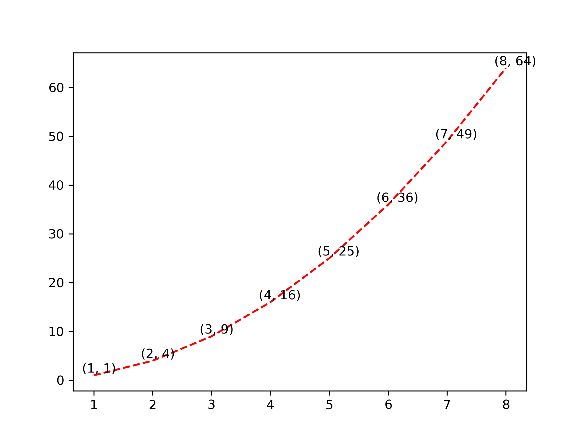
Figure 6: 簡單的文字註解
3.7 子圖表: plt.subplot()
- 範例
1: import numpy as np 2: import matplotlib.pyplot as plt 3: 4: from matplotlib.ticker import NullFormatter # useful for `logit` scale 5: 6: # Fixing random state for reproducibility 7: np.random.seed(19680801) 8: 9: # make up some data in the interval ]0, 1[ 10: y = np.random.normal(loc=0.5, scale=0.4, size=1000) 11: y = y[(y > 0) & (y < 1)] 12: y.sort() 13: x = np.arange(len(y)) 14: 15: # plot with various axes scales 16: plt.figure() 17: 18: # linear 19: plt.subplot(221) 20: plt.plot(x, y) 21: plt.yscale('linear') 22: plt.title('linear') 23: plt.grid(True) 24: 25: 26: # log 27: plt.subplot(222) 28: plt.plot(x, y) 29: plt.yscale('log') 30: plt.title('log') 31: plt.grid(True) 32: 33: 34: # symmetric log 35: plt.subplot(223) 36: plt.plot(x, y - y.mean()) 37: plt.yscale('symlog', linthreshy=0.01) 38: plt.title('symlog') 39: plt.grid(True) 40: 41: # logit 42: plt.subplot(224) 43: plt.plot(x, y) 44: plt.yscale('logit') 45: plt.title('logit') 46: plt.grid(True) 47: # Format the minor tick labels of the y-axis into empty strings with 48: # `NullFormatter`, to avoid cumbering the axis with too many labels. 49: plt.gca().yaxis.set_minor_formatter(NullFormatter()) 50: # Adjust the subplot layout, because the logit one may take more space 51: # than usual, due to y-tick labels like "1 - 10^{-3}" 52: plt.subplots_adjust(top=0.92, bottom=0.08, left=0.10, right=0.95, hspace=0.25, 53: wspace=0.35) 54: 55: plt.savefig('simpleSubplot.png', dpi = 300)
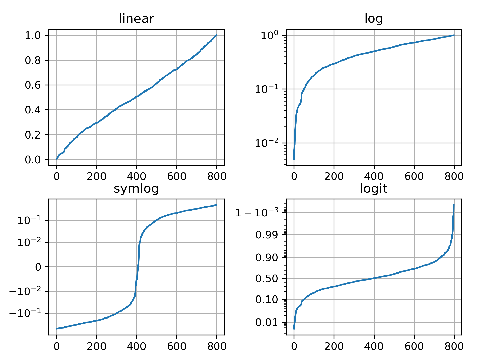
Figure 7: 簡單的子圖表
4 區域資料檔分析
4.1 Excel/CSV: Pandas模組
4.1.1 CSV
為純文字檔，以逗號分隔值（Comma-Separated Values，CSV，有時也稱為字元分隔值，因為分隔字元也可以不是逗號）。
純文字意味著該檔案是一個字元序列，不含必須像二進位制數字那樣被解讀的資料。
CSV檔案由任意數目的記錄組成，記錄間以某種換行符分隔；每條記錄由欄位組成，欄位間的分隔符是其它字元或字串，最常見的是逗號或製表符。通常，所有記錄都有完全相同的欄位序列6。
4.1.2 Pandas
Pandas是python的一個數據分析模組，2009 年底開源出來，提供高效能、簡易使用的資料格式(Data Frame)讓使用者可以快速操作及分析資料，Pandas強化了資料處理的方便性也能與處理網頁資料與資料庫資料等，有點類似於Office的Excel能更加方便的進行運算、分析等7。
Pandas主要特色有8：
- 在異質數據的讀取、轉換和處理上，都讓分析人員更容易處理，例如：從列欄試算表中找到想要的值。
- Pandas 提供兩種主要的資料結構，Series 與 DataFrame。Series 顧名思義就是用來處理時間序列相關的資料(如感測器資料等)，主要為建立索引的一維陣列。DataFrame 則是用來處理結構化(Table like)的資料，有列索引與欄標籤的二維資料集，例如關聯式資料庫、CSV 等等。
- 透過載入至 Pandas 的資料結構物件後，可以透過結構化物件所提供的方法，來快速地進行資料的前處理，如資料補值，空值去除或取代等。
- 更多的輸入來源及輸出整合性，例如：可以從資料庫讀取資料進入 Dataframe，也可將處理完的資料存回資料庫。
4.1.3 Pandas資料結構
Pandas是Python的資料分析函式庫，從2009年底開放原始碼，提供簡易使用的資料結構和分析工具，讓分析人員可以快速方便的處理結構化資料。要使用Pandas之前，先瞭解兩個主要資料結構9：
- Series: 是一維標籤陣列（array），能夠保存任何資料類型（整數、字符串、浮點數等）。
- DataFrame: 是一個二維標籤資料結構，可以具有不同類型的行（column），類似Excel的資料表，對於有使用過統計軟體的分析人員應該不陌生。
簡單來說，Series可以想像為一行多列（row）的資料，而DataFrame是多行多列的資料，藉由選擇索引（列標籤）和行（行標籤）的參數來操作資料，就像使用統計軟體透過樣本編號或變項名稱來操作資料。
4.2 Pandas functions
4.2.1 資料選取10
- Select as dictinoary (column):
df[[[['col1', col2']]]]df.col1
1: import pandas as pd 2: 3: # 讀取csv 4: df = pd.read_csv("scores.csv") 5: 6: # colum 7: print(df.id) 8: print(df[['id', 'typing']])
Pandas version: 0.25.1 0 201910901 1 201910902 2 201910903 3 201910904 4 201910905 ... 207 201911726 208 201911727 209 201911728 210 201911729 211 201911730 Name: id, Length: 212, dtype: int64 id typing 0 201910901 72 1 201910902 56 2 201910903 76 3 201910904 64 4 201910905 56 .. ... ... 207 201911726 80 208 201911727 60 209 201911728 48 210 201911729 84 211 201911730 72 [212 rows x 2 columns] - Select using index (row):
df[1:20]
1: import pandas as pd 2: 3: df = pd.read_csv("scores.csv") 4: 5: print(df[1:3]) 6: print(df[df.homework<30])
id classparti typing homework midexam finalexam 1 201910902 96 56 93.42 60.0 40.0 2 201910903 96 76 102.63 45.0 28.0 id classparti typing homework midexam finalexam 10 201910911 62 44 20.39 4.0 0.0 18 201910919 14 56 25.92 0.0 0.0 23 201910924 75 48 10.75 0.0 0.0 124 201911315 71 120 15.35 0.0 0.0 140 201911331 93 120 25.88 0.0 16.0 0 False 1 False 2 False 3 False 4 False ... 207 False 208 False 209 False 210 False 211 False Name: homework, Length: 212, dtype: bool - loc, iloc, between 11
- loc: 基於行標籤和列標籤（xlabel、ylabel）進行索引，以column名做為index
- iloc: 基於行索引和列索引（index，columns） 都是從 0 開始，以數字做為index
- between: 檢查區間值,
Series.between(self, left, right, inclusive=True)
- 範例1
1: import pandas as pd 2: 3: df = pd.read_csv("scores.csv") 4: 5: print(df.loc[df.homework<25, ['id', 'homework']]) 6: print(df.iloc[:5, 2:5]) 7:
id homework 10 201910911 20.39 23 201910924 10.75 124 201911315 15.35 typing homework midexam 0 72 92.11 48.0 1 56 93.42 60.0 2 76 102.63 45.0 3 64 86.84 44.0 4 56 42.11 0.0 - 範例2
1: # 載入函式庫 2: import pandas as pd 3: 4: print("Pandas version:", pd.__version__) 5: # 讀取csv 6: df = pd.read_csv("scores.csv") 7: # 輸出前3筆 8: print(df.iloc[:3]) 9: # 輸出前3筆的第2,3欄 10: print(df.iloc[:2, 1:3]) 11: # 輸出第3筆user的homework成績 12: print(df.loc[2,'homework']) 13: 14: print(df['midexam'].between(50, 60)) 15: midFilter = df['midexam'].between(50, 55) 16: print(df[midFilter])
Pandas version: 0.25.1 id classparti typing homework midexam finalexam 0 201910901 100 72 92.11 48.0 16.0 1 201910902 96 56 93.42 60.0 40.0 2 201910903 96 76 102.63 45.0 28.0 classparti typing 0 100 72 1 96 56 102.63 0 False 1 True 2 False 3 False 4 False ... 207 False 208 False 209 False 210 False 211 False Name: midexam, Length: 212, dtype: bool id classparti typing homework midexam finalexam 6 201910907 101 120 92.11 55.0 20.0 65 201911029 93 60 82.00 50.0 16.0 72 201911036 88 80 102.63 53.0 76.0 92 201911119 82 104 89.47 50.0 20.0 94 201911121 95 100 88.51 52.0 72.0 109 201911136 91 100 81.58 51.0 4.0 171 201911626 98 72 97.37 50.0 75.0
- loc: 基於行標籤和列標籤（xlabel、ylabel）進行索引，以column名做為index
4.2.2 條件式選取資料
- 語法
- srcpython [:exports code]{ df[(condition)] }
- srcpython [:exports code]{ df[(condition 1) & (condition 2) ] }
- srcpython [:exports code]{ df[(condition)] }
- 範例
1: import pandas as pd 2: 3: df = pd.read_csv("scores.csv") 4: 5: print(df[(df.midexam >= 100) & (df.finalexam >= 100)])
id classparti typing homework midexam finalexam 11 201910912 87 92 92.11 110.8 103.75 70 201911034 104 92 102.63 100.8 101.00 88 201911115 120 88 105.26 113.5 111.00 98 201911125 119 80 107.89 113.2 115.00 102 201911129 106 52 102.63 103.6 100.00 127 201911318 108 80 102.63 104.8 100.00 138 201911329 105 48 107.89 100.0 100.00 143 201911334 100 120 81.58 104.8 113.00 153 201911608 88 0 102.63 100.0 100.00 169 201911624 82 100 102.63 101.5 105.00 182 201911701 103 108 92.63 100.0 100.00 189 201911708 106 108 102.63 107.2 101.00 190 201911709 108 88 107.89 104.8 105.00 191 201911710 102 100 102.63 100.0 105.00 193 201911712 105 96 101.58 107.5 100.00 195 201911714 102 44 107.89 110.0 110.00 196 201911715 106 120 107.89 102.4 105.00 198 201911717 80 120 107.89 106.0 100.00 201 201911721 109 76 100.00 100.0 100.00 203 201911722 105 120 102.63 101.5 105.00 210 201911729 87 84 105.26 112.3 103.00
4.3 進階分析
4.3.1 計算: Aggregation, Groupby
- create new column based on other column
- simple aggregation
- groupby with aggregation function
- 範例
1: # 載入函式庫 2: import pandas as pd 3: 4: # 讀取csv 5: df = pd.read_csv("scores.csv") 6: 7: # 計算總分' 8: df['Final'] = df.classparti*.1 + df.typing*.1 + df.homework*.2 + df.midexam*.3 + df.finalexam*.3 9: 10: # create new column according to typing speed 11: df.loc[df.typing < 30, 'TypingSpeed' ] = 'LOW' 12: df.loc[df.typing.between(30, 60), 'TypingSpeed' ] = 'MID' 13: df.loc[df.typing > 60, 'TypingSpeed' ] = 'HIGH' 14: 15: print(df) 16: 17: # 依打字速度分組 18: print(df.groupby('TypingSpeed')['Final'].mean()) 19: 20: # PASS/FAIL 21: df.loc[df.Final < 60, 'PASS'] = False 22: df.loc[df.Final >= 60, 'PASS'] = True 23: 24: print(df.groupby('PASS')['typing'].mean()) 25:
id classparti typing ... finalexam Final TypingSpeed 0 201910901 100 72 ... 16.0 54.822 HIGH 1 201910902 96 56 ... 40.0 63.884 MID 2 201910903 96 76 ... 28.0 59.626 HIGH 3 201910904 93 64 ... 25.0 53.768 HIGH 4 201910905 93 56 ... 20.0 29.322 MID .. ... ... ... ... ... ... ... 207 201911726 106 80 ... 103.0 98.976 HIGH 208 201911727 82 60 ... 100.0 89.926 MID 209 201911728 83 48 ... 75.0 81.026 MID 210 201911729 87 84 ... 103.0 102.742 HIGH 211 201911730 96 72 ... 100.0 94.626 HIGH [212 rows x 8 columns] TypingSpeed HIGH 69.977451 LOW 68.517333 MID 64.086303 Name: Final, dtype: float64 PASS False 77.567568 True 84.525547 Name: typing, dtype: float64
4.3.2 資料檔下載: scores.csv
4.4 資料視覺化
4.4.1 Bar chart
1: # 載入函式庫 2: import pandas as pd 3: import matplotlib.pyplot as plt 4: # 讀取csv 5: df = pd.read_csv("scores.csv") 6: 7: # 計算總分' 8: df['Final'] = df.classparti*.1 + df.typing*.1 + df.homework*.2 + df.midexam*.3 + df.finalexam*.3 9: 10: # create new column according to typing speed 11: df.loc[df.typing < 30, 'TypingSpeed' ] = 'Level-1' 12: df.loc[df.typing.between(30, 60), 'TypingSpeed' ] = 'Level-2' 13: df.loc[df.typiohong > 60, 'TypingSpeed' ] = 'Level-3' 14: 15: fig = df.groupby('TypingSpeed')['homework','classparti'].mean().plot(kind='bar', title="XXX", rot=0, legend=True) 16: fig.set_xlabel("Typing Speed") 17: fig.set_ylabel("score") 18: savefig = fig.get_figure() 19: savefig.savefig('pandasPlot1.png', bbox_inches='tight')

Figure 8: Pandas plot bar chart
4.4.2 Pie chart
1: # 載入函式庫 2: import pandas as pd 3: import matplotlib.pyplot as plt 4: # 讀取csv 5: df = pd.read_csv("scores.csv") 6: 7: # 計算總分' 8: df['Final'] = df.classparti*.1 + df.typing*.1 + df.homework*.2 + df.midexam*.3 + df.finalexam*.3 9: 10: # create new column according to typing speed 11: df.loc[df.typing < 60, 'TypingSpeed' ] = 'Level-1' 12: df.loc[df.typing.between(60, 80), 'TypingSpeed' ] = 'Level-2' 13: df.loc[df.typing > 80, 'TypingSpeed' ] = 'Level-3' 14: print(df.groupby('TypingSpeed').count()) 15: 16: fig = df.groupby('TypingSpeed')['TypingSpeed'].count().plot(kind='pie', title="XXX", rot=0, legend=True) 17: savefig = fig.get_figure() 18: savefig.savefig('pandasPlot2.png', bbox_inches='tight')
id classparti typing homework midexam finalexam Final
TypingSpeed
Level-1 25 25 25 25 25 25 25
Level-2 86 86 86 86 86 86 86
Level-3 101 101 101 101 100 101 100
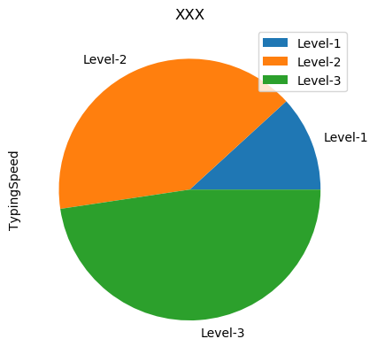
Figure 9: Pandas plot pie chart
4.4.3 Scatter chart
1: # 載入函式庫 2: import pandas as pd 3: import matplotlib.pyplot as plt 4: 5: # 讀取csv 6: df = pd.read_csv("scores.csv") 7: 8: fig = df[['typing','homework']].plot(kind='scatter', x=0, y=1) 9: df[['typing','homework']].plot.line(x=0, y=1) 10: #fig = df[['typing','finalexam']].plot(kind='scatter', x=0, y=1) 11: 12: savefig = fig.get_figure() 13: savefig.savefig('PandasPlot3.png')
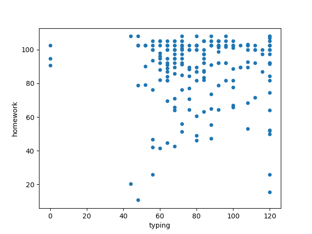
Figure 10: Pandas plot scatter chart
4.4.4 Line chart
1: # 載入函式庫 2: import pandas as pd 3: import matplotlib.pyplot as plt 4: 5: # 讀取csv 6: df = pd.read_csv("scores.csv") 7: 8: fig = df[['midexam','finalexam']].plot(kind='scatter', x=0, y=1) 9: 10: savefig = fig.get_figure() 11: savefig.savefig('PandasPlot4.png') 12:
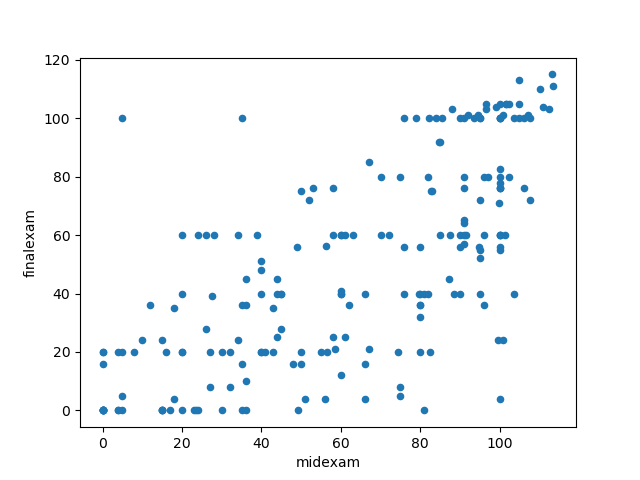
Figure 11: Pandas plot scatter chart
5 網路爬蟲
5.1 parse JSON
5.1.1 What is JSON?12
JSON(JavaScript Object Notation，JavaScript物件表示法)是個以純文字為基底去儲存和傳送簡單結構資料，你可以透過特定的格式去儲存任何資料(字串,數字,陣列,物件)，也可以透過物件或陣列來傳送較複雜的資料。一旦建立了您的 JSON 資料，就可以非常簡單的跟其他程式溝通或交換資料，因為 JSON 就只是純文字個格式。
5.1.2 JSON的優點
- 相容性高
- 格式容易瞭解，閱讀及修改方便
- 支援許多資料格式 (number,string,booleans,nulls,array,associative array)
- 許多程式都支援函式庫讀取或修改 JSON 資料
5.1.3 JSON結構
- 物件: {}
- 陣列: []
5.1.4 實作1: 國際主要國家貨幣每月匯率概況
下載JSON
1: import requests 2: 3: json_url = 'https://apiservice.mol.gov.tw/OdService/download/A17030000J-000049-8nD' 4: response = requests.get(json_url) 5: 6: jsonRes = response.json() 7: print(jsonRes) 8: print(type(jsonRes)) 9: for item in jsonRes: 10: print(item['月別'], ": ", item['新台幣'], " / ", item['歐元']) 11:
[{'月別': '2019-01', '新台幣': '30.740', '人民幣': '6.7055', '日圓': '108.73', '韓元': '1112.7', '新加坡元': '1.3453', '歐元': '1.1497', '英鎊': '1.3135', '澳幣': '0.7270'}, {'月別': '2019-02', '新台幣': '30.775', '人民幣': '6.6835', '日圓': '110.37', '韓元': '1119.1', '新加坡元': '1.3479', '歐元': '1.1379', '英鎊': '1.3256', '澳幣': '0.7179'}, {'月別': '2019-03', '新台幣': '30.825', '人民幣': '6.7202', '日圓': '110.74', '韓元': '1135.1', '新加坡元': '1.3547', '歐元': '1.1232', '英鎊': '1.3025', '澳幣': '0.7090'}, {'月別': '2019-04', '新台幣': '30.905', '人民幣': '6.7366', '日圓': '111.33', '韓元': '1168.2', '新加坡元': '1.3620', '歐元': '1.1186', '英鎊': '1.2953', '澳幣': '0.7043'}, {'月別': '2019-05', '新台幣': '31.612', '人民幣': '6.9020', '日圓': '108.77', '韓元': '1190.9', '新加坡元': '1.3774', '歐元': '1.1144', '英鎊': '1.2621', '澳幣': '0.6924'}, {'月別': '2019-06', '新台幣': '31.072', '人民幣': '6.8683', '日圓': '107.64', '韓元': '1154.7', '新加坡元': '1.3528', '歐元': '1.1387', '英鎊': '1.2676', '澳幣': '0.7016'}, {'月別': '2019-07', '新台幣': '31.096', '人民幣': '6.8855', '日圓': '108.56', '韓元': '1183.1', '新加坡元': '1.3697', '歐元': '1.1153', '英鎊': '1.2165', '澳幣': '0.6888'}, {'月別': '2019-08', '新台幣': '31.410', '人民幣': '7.1452', '日圓': '106.51', '韓元': '1211.2', '新加坡元': '1.3884', '歐元': '1.1039', '英鎊': '1.2177', '澳幣': '0.6720'}, {'月別': '2019-09', '新台幣': '31.042', '人民幣': '7.1195', '日圓': '107.84', '韓元': '1199.9', '新加坡元': '1.3823', '歐元': '1.0918', '英鎊': '1.2280', '澳幣': '0.6758'}, {'月別': '2019-10', '新台幣': '30.462', '人民幣': '7.0350', '日圓': '108.59', '韓元': '1163.4', '新加坡元': '1.3602', '歐元': '1.1162', '英鎊': '1.2940', '澳幣': '0.6920'}, {'月別': '2019-11', '新台幣': '30.513', '人民幣': '7.0261', '日圓': '109.50', '韓元': '1181.2', '新加坡元': '1.3668', '歐元': '1.1012', '英鎊': '1.2918', '澳幣': '0.6778'}, {'月別': '2019-12', '新台幣': '30.106', '人民幣': '6.9662', '日圓': '108.64', '韓元': '1154.6', '新加坡元': '1.3461', '歐元': '1.1210', '英鎊': '1.3139', '澳幣': '0.7009'}, {'月別': '2020-01', '新台幣': '30.250', '人民幣': '6.9300', '日圓': '109.05', '韓元': '1191.8', '新加坡元': '1.3624', '歐元': '1.1028', '英鎊': '1.3128', '澳幣': '0.6710'}] <class 'list'> 2019-01 : 30.740 / 1.1497 2019-02 : 30.775 / 1.1379 2019-03 : 30.825 / 1.1232 2019-04 : 30.905 / 1.1186 2019-05 : 31.612 / 1.1144 2019-06 : 31.072 / 1.1387 2019-07 : 31.096 / 1.1153 2019-08 : 31.410 / 1.1039 2019-09 : 31.042 / 1.0918 2019-10 : 30.462 / 1.1162 2019-11 : 30.513 / 1.1012 2019-12 : 30.106 / 1.1210 2020-01 : 30.250 / 1.1028資料視覺化
1: import requests 2: import pandas as pd 3: 4: json_url = 'https://apiservice.mol.gov.tw/OdService/download/A17030000J-000049-8nD' 5: response = requests.get(json_url) 6: jsonRes = response.json() 7: 8: dates = [i['月別'] for i in jsonRes] 9: NT = [float(i['新台幣']) for i in jsonRes] 10: JPY = [float(i['日圓']) for i in jsonRes] 11: EUR = [float(i['歐元']) for i in jsonRes] 12: df = pd.DataFrame({'月份':dates, '新台幣':NT, '日圓':JPY, '歐元':EUR}) 13: df['月份'] = [pd.to_datetime(i, format='%y%m', errors='ignore') for i in df['月份']] 14: print(df) 15: 16: import matplotlib.pyplot as plt 17: 18: plt.clf() 19: plt.plot(df['月份'], NT) 20: #plt.plot(dates, JPY) 21: #plt.plot(dates, EUR) 22: plt.savefig('jsonLine.png', dpi=300) 23:
月份 新台幣 日圓 歐元 0 2019-01 30.740 108.73 1.1497 1 2019-02 30.775 110.37 1.1379 2 2019-03 30.825 110.74 1.1232 3 2019-04 30.905 111.33 1.1186 4 2019-05 31.612 108.77 1.1144 5 2019-06 31.072 107.64 1.1387 6 2019-07 31.096 108.56 1.1153 7 2019-08 31.410 106.51 1.1039 8 2019-09 31.042 107.84 1.0918 9 2019-10 30.462 108.59 1.1162 10 2019-11 30.513 109.50 1.1012 11 2019-12 30.106 108.64 1.1210 12 2020-01 30.250 109.05 1.1028
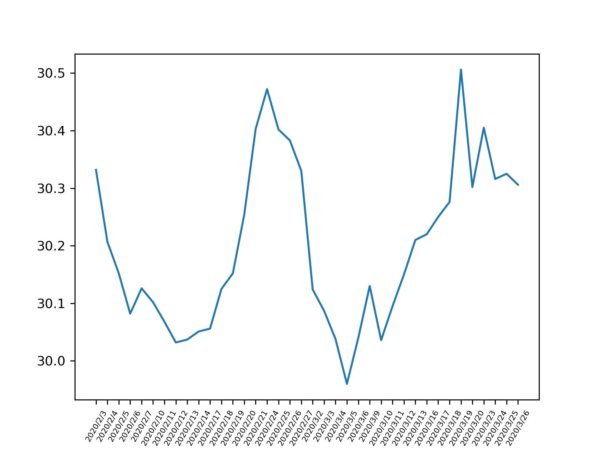
Figure 12: 滙率
5.1.5 實作2: 澎湖生活博物館每月參觀人次統計資料
1: #coding:utf-8 2: import requests 3: import pandas as pd 4: from datetime import datetime 5: 6: json_url = 'http://opendataap2.penghu.gov.tw/resource/files/2020-01-12/eaa641fc3af66277e60b13201ca11232.json' 7: 8: response = requests.get(json_url) 9: jsonRes = response.json() 10: 11: year = [i['年度'] for i in jsonRes] 12: month = [i['月份'] for i in jsonRes] 13: visitor = [int(i['人數']) for i in jsonRes] 14: 15: df = pd.DataFrame({'year':year, 'month':month, 'visitor':visitor}) 16: df['date'] = [str(int(i)+1911)+'-'+j for i, j in zip(df['year'], df['month'])] 17: 18: df['time'] = [pd.to_datetime(i, format='%y%m', errors='ignore') for i in df['date']] 19: 20: import matplotlib.pyplot as plt 21: plt.rcParams['font.family'] = 'cwTeXFangSong' 22: plt.clf() 23: plt.bar(df['date'], df['visitor']) 24: plt.xticks(rotation=60, fontsize=6) 25: plt.ylabel('人數') 26: plt.xlabel('日期') 27: plt.title('澎湖生活博物館每月參觀人次') 28: plt.savefig('jsonBar.png', dpi=300, bbox_inches='tight')
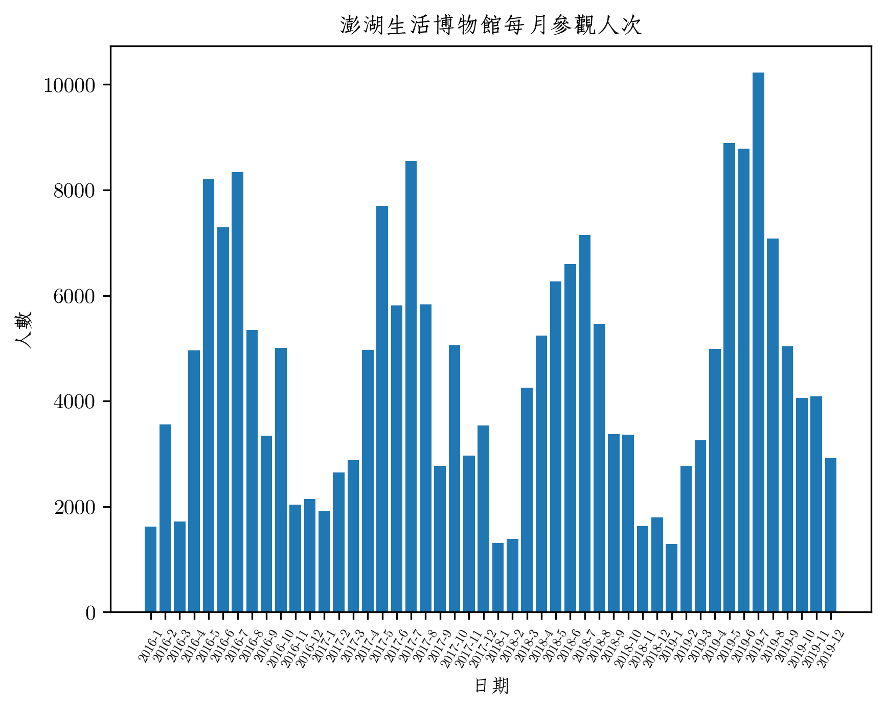
Figure 13: 參觀人數
5.1.6 實作3: 下載JSON
1: import requests 2: import json 3: json_url = 'http://www.kh.edu.tw/json/bulletin/employ/datagrid?page=1&rows=20' 4: response = requests.get(json_url) 5: 6: print(response) 7: # 方法1 8: jsonRes1 = response.json() 9: print(type(jsonRes1)) 10: # 11: jsonRes2 = json.loads(response.text) 12: print(type(jsonRes2)) 13: 14: print(jsonRes2)
<Response [200]>
<class 'dict'>
<class 'dict'>
{'total': 20, 'rows': [{'author': '立志高中', 'attributes': {'subjects': '', 'url': 'https://employ.kh.edu.tw/Html/2020/3/三民區108學年度立志高中第1號第1次公告簡章.html', 'target': '_blank'}, 'title': '108學年度立志高中第1號第1次公告', 'pubDate': '109-03-06'}, {'author': '阿蓮國小', 'attributes': {'subjects': '五年級自然與生活科技領域', 'url': 'https://employ.kh.edu.tw/Html/2020/3/阿蓮區108學年度阿蓮國小第12號第3次公告簡章.html', 'target': '_blank'}, 'title': '108學年度阿蓮國小第12號第3次公告', 'pubDate': '109-03-06'}, {'author': '金潭國小', 'attributes': {'subjects': '學前不分類巡迴輔導班', 'url': 'https://employ.kh.edu.tw/Html/2020/3/林園區108學年度金潭國小第6號第3次公告簡章.html', 'target': '_blank'}, 'title': '108學年度金潭國小第6號第3次公告', 'pubDate': '109-03-06'}, {'author': '楠梓國中', 'attributes': {'subjects': '歷史', 'url': 'https://employ.kh.edu.tw/Html/2020/3/楠梓區108學年度楠梓國中第8號第3次公告簡章.html', 'target': '_blank'}, 'title': '108學年度楠梓國中第8號第3次公告', 'pubDate': '109-03-06'}, {'author': '燕巢國中', 'attributes': {'subjects': '資訊科技科(電腦科)', 'url': 'https://employ.kh.edu.tw/Html/2020/3/燕巢區108學年度燕巢國中第13號第1次公告簡章.html', 'target': '_blank'}, 'title': '108學年度燕巢國中第13號第1次公告', 'pubDate': '109-03-06'}, {'author': '中崙國中', 'attributes': {'subjects': '英語', 'url': 'https://employ.kh.edu.tw/Html/2020/3/鳳山區108學年度中崙國中第7號第3次公告簡章.html', 'target': '_blank'}, 'title': '108學年度中崙國中第7號第3次公告', 'pubDate': '109-03-05'}, {'author': '烏林國小', 'attributes': {'subjects': '特教身心障礙巡迴輔導班', 'url': 'https://employ.kh.edu.tw/Html/2020/3/仁武區108學年度烏林國小第3號第1次公告簡章.html', 'target': '_blank'}, 'title': '108學年度烏林國小第3號第1次公告', 'pubDate': '109-03-04'}, {'author': '巴楠花部落中小學', 'attributes': {'subjects': '生物', 'url': 'https://employ.kh.edu.tw/Html/2020/3/杉林區108學年度巴楠花部落中小學第14號第3次公告簡章.html', 'target': '_blank'}, 'title': '108學年度巴楠花部落中小學第14號第3次公告', 'pubDate': '109-03-04'}, {'author': '中山國小', 'attributes': {'subjects': '綜合科', 'url': 'https://employ.kh.edu.tw/Html/2020/3/鼓山區108學年度中山國小第10號第2次公告簡章.html', 'target': '_blank'}, 'title': '108學年度中山國小第10號第2次公告', 'pubDate': '109-03-03'}, {'author': '福誠高中', 'attributes': {'subjects': '地理', 'url': 'https://employ.kh.edu.tw/Html/2020/3/鳳山區108學年度福誠高中第19號第3次公告簡章.html', 'target': '_blank'}, 'title': '108學年度福誠高中第19號第3次公告', 'pubDate': '109-03-03'}, {'author': '彌陀國小', 'attributes': {'subjects': '', 'url': 'https://employ.kh.edu.tw/Html/2020/3/彌陀區108學年度彌陀國小第5號第1次公告簡章.html', 'target': '_blank'}, 'title': '108學年度彌陀國小第5號第1次公告', 'pubDate': '109-03-03'}, {'author': '七賢國中', 'attributes': {'subjects': '數學', 'url': 'https://employ.kh.edu.tw/Html/2020/3/鼓山區108學年度七賢國中第9號第1次公告簡章.html', 'target': '_blank'}, 'title': '108學年度七賢國中第9號第1次公告', 'pubDate': '109-03-03'}, {'author': '文德國小', 'attributes': {'subjects': '普通科留職停薪', 'url': 'https://employ.kh.edu.tw/Html/2020/3/鳳山區108學年度文德國小第5號第1次公告簡章.html', 'target': '_blank'}, 'title': '108學年度文德國小第5號第1次公告', 'pubDate': '109-03-03'}, {'author': '巴楠花部落中小學', 'attributes': {'subjects': '', 'url': 'https://employ.kh.edu.tw/Html/2020/3/杉林區108學年度巴楠花部落中小學第13號第4次公告簡章.html', 'target': '_blank'}, 'title': '108學年度巴楠花部落中小學第13號第4次公告', 'pubDate': '109-03-03'}, {'author': '八卦國小', 'attributes': {'subjects': '', 'url': 'https://employ.kh.edu.tw/Html/2020/3/仁武區108學年度八卦國小第8號第1次公告簡章.html', 'target': '_blank'}, 'title': '108學年度八卦國小第8號第1次公告', 'pubDate': '109-03-03'}, {'author': '登發國小', 'attributes': {'subjects': '普通科', 'url': 'https://employ.kh.edu.tw/Html/2020/3/仁武區108學年度登發國小第3號第1次公告簡章.html', 'target': '_blank'}, 'title': '108學年度登發國小第3號第1次公告', 'pubDate': '109-03-03'}, {'author': '溪埔國中', 'attributes': {'subjects': '特殊教育數學專長', 'url': 'https://employ.kh.edu.tw/Html/2020/3/大樹區108學年度溪埔國中第7號第1次公告簡章.html', 'target': '_blank'}, 'title': '108學年度溪埔國中第7號第1次公告', 'pubDate': '109-03-02'}, {'author': '青山國小', 'attributes': {'subjects': '', 'url': 'https://employ.kh.edu.tw/Html/2020/3/小港區108學年度青山國小第7號第3次公告簡章.html', 'target': '_blank'}, 'title': '108學年度青山國小第7號第3次公告', 'pubDate': '109-03-02'}, {'author': '永清國小', 'attributes': {'subjects': '資源班', 'url': 'https://employ.kh.edu.tw/Html/2020/3/左營區108學年度永清國小第4號第2次公告簡章.html', 'target': '_blank'}, 'title': '108學年度永清國小第4號第2次公告', 'pubDate': '109-03-02'}, {'author': '甲仙國中', 'attributes': {'subjects': '', 'url': 'https://employ.kh.edu.tw/Html/2020/3/甲仙區108學年度甲仙國中第5號第1次公告簡章.html', 'target': '_blank'}, 'title': '108學年度甲仙國中第5號第1次公告', 'pubDate': '109-03-02'}]}
5.1.7 實作: 解析JSON
1: import requests 2: import json 3: 4: response = requests.get('http://www.kh.edu.tw/json/bulletin/employ/datagrid?page=1&rows=20') 5: jsonRes = response.json() 6: #print(jsonRes['rows']) 7: for item in jsonRes['rows']: 8: print(item['author'], ":", item['title']," / ", item['pubDate']) 9: sortJR = jsonRes['rows'] 10: print(type(sortJR)) 11: 12: sortJR.sort(key=lambda x: x2['author'], reverse=False) 13: for item in sortJR: 14: print(item['author'], ":", item['title']," / ", item['pubDate'])
立志高中 : 108學年度立志高中第1號第1次公告 / 109-03-06 阿蓮國小 : 108學年度阿蓮國小第12號第3次公告 / 109-03-06 金潭國小 : 108學年度金潭國小第6號第3次公告 / 109-03-06 楠梓國中 : 108學年度楠梓國中第8號第3次公告 / 109-03-06 燕巢國中 : 108學年度燕巢國中第13號第1次公告 / 109-03-06 中崙國中 : 108學年度中崙國中第7號第3次公告 / 109-03-05 烏林國小 : 108學年度烏林國小第3號第1次公告 / 109-03-04 巴楠花部落中小學 : 108學年度巴楠花部落中小學第14號第3次公告 / 109-03-04 中山國小 : 108學年度中山國小第10號第2次公告 / 109-03-03 福誠高中 : 108學年度福誠高中第19號第3次公告 / 109-03-03 彌陀國小 : 108學年度彌陀國小第5號第1次公告 / 109-03-03 七賢國中 : 108學年度七賢國中第9號第1次公告 / 109-03-03 文德國小 : 108學年度文德國小第5號第1次公告 / 109-03-03 巴楠花部落中小學 : 108學年度巴楠花部落中小學第13號第4次公告 / 109-03-03 八卦國小 : 108學年度八卦國小第8號第1次公告 / 109-03-03 登發國小 : 108學年度登發國小第3號第1次公告 / 109-03-03 溪埔國中 : 108學年度溪埔國中第7號第1次公告 / 109-03-02 青山國小 : 108學年度青山國小第7號第3次公告 / 109-03-02 永清國小 : 108學年度永清國小第4號第2次公告 / 109-03-02 甲仙國中 : 108學年度甲仙國中第5號第1次公告 / 109-03-02 <class 'list'> 七賢國中 : 108學年度七賢國中第9號第1次公告 / 109-03-03 中山國小 : 108學年度中山國小第10號第2次公告 / 109-03-03 中崙國中 : 108學年度中崙國中第7號第3次公告 / 109-03-05 八卦國小 : 108學年度八卦國小第8號第1次公告 / 109-03-03 巴楠花部落中小學 : 108學年度巴楠花部落中小學第14號第3次公告 / 109-03-04 巴楠花部落中小學 : 108學年度巴楠花部落中小學第13號第4次公告 / 109-03-03 彌陀國小 : 108學年度彌陀國小第5號第1次公告 / 109-03-03 文德國小 : 108學年度文德國小第5號第1次公告 / 109-03-03 楠梓國中 : 108學年度楠梓國中第8號第3次公告 / 109-03-06 永清國小 : 108學年度永清國小第4號第2次公告 / 109-03-02 溪埔國中 : 108學年度溪埔國中第7號第1次公告 / 109-03-02 烏林國小 : 108學年度烏林國小第3號第1次公告 / 109-03-04 燕巢國中 : 108學年度燕巢國中第13號第1次公告 / 109-03-06 甲仙國中 : 108學年度甲仙國中第5號第1次公告 / 109-03-02 登發國小 : 108學年度登發國小第3號第1次公告 / 109-03-03 福誠高中 : 108學年度福誠高中第19號第3次公告 / 109-03-03 立志高中 : 108學年度立志高中第1號第1次公告 / 109-03-06 金潭國小 : 108學年度金潭國小第6號第3次公告 / 109-03-06 阿蓮國小 : 108學年度阿蓮國小第12號第3次公告 / 109-03-06 青山國小 : 108學年度青山國小第7號第3次公告 / 109-03-02
5.1.8 練習
以程式抓取高雄市政府資料開放平台的線上JSON資料，parse並輸出所需結果
5.2 parse HTML
- what is HTML
- 精神：將程式模仿成一般user
5.2.1 所需套件
- BeautifulSoup
pip install beautifulsoup4
5.3 範例: 以程式抓取PTT電影板header
5.3.1 原則
- 要抓網路資料，就要先仔細觀察網頁內容
- 要儘量欺騙網站自己是browser
5.3.2 實作: 取得HTML資料
- 第一版
1: # 抓取PTT電影版header 2: import urllib.request as req 3: url = "https://www.ptt.cc/bbs/Stock/index.html" 4: 5: with req.urlopen(url) as response: 6: data = response.read().decode("utf-8") 7: print(data)
urllib.error.HTTPError: HTTP Error 403: Forbidden
被拒絕原因：這隻程式的行為不像一般使用者，被網站伺服器拒絕。403 Forbidden 是HTTP協議中的一個HTTP狀態碼（Status Code）。可以簡單的理解為沒有權限訪問此站，服務器收到請求但拒絕提供服務13。
- 第二版:加入header
1: import urllib.request as req 2: url = "https://www.ptt.cc/bbs/Stock/index.html" 3: # 幫request加上一個header 4: request = req.Request(url, headers = { 5: "User-Agent":"Mozilla/5.0 (Macintosh; Intel Mac OS X 10.14; rv:72.0) Gecko/20100101 Firefox/72.0" 6: }) 7: 8: with req.urlopen(request) as response: 9: data = response.read().decode("utf-8") 10: print('所取得的資料型態：',type(data)) 11: print(data[700:1000])
所取得的資料型態： <class 'str'> er"> <div id="topbar" class="bbs-content"> <a id="logo" href="/bbs/">批踢踢實業坊</a> <span>›</span> <a class="board" href="/bbs/Stock/index.html"><span class="board-label">看板 </span>Stock</a> <a class="right small" href="/about.html">關於我們</a> <a class="right small" href="/contact.html">
5.3.3 實作：解析HTML資料內容
- 安裝解析HTML所需套件
pip install beautifulsoup4
- 第三版: 解析HTML
1: import urllib.request as req 2: url = "https://www.ptt.cc/bbs/Stock/index.html" 3: # 幫request加上一個header 4: request = req.Request(url, headers = { 5: "User-Agent":"Mozilla/5.0 (Macintosh; Intel Mac OS X 10.14; rv:72.0) Gecko/20100101 Firefox/72.0" 6: }) 7: 8: with req.urlopen(request) as response: 9: data = response.read().decode("utf-8") 10: 11: import bs4 12: root = bs4.BeautifulSoup(data,"html.parser") 13: print(root.title) 14: titles = root.find("div", class_="title") 15: print(titles) 16: print(titles.a.string) 17: titles = root.find_all("div", class_="title") 18: print(titles) 19: for title in titles: 20: if title.a != None: 21: print(title.a.string)
<title>看板 Stock 文章列表 - 批踢踢實業坊</title> <div class="title"> <a href="/bbs/Stock/M.1581985895.A.742.html">Re: [新聞] 蝗蟲抵達邊境 中國人自信：威脅不大</a> </div> Re: [新聞] 蝗蟲抵達邊境 中國人自信：威脅不大 [<div class="title"> <a href="/bbs/Stock/M.1581985895.A.742.html">Re: [新聞] 蝗蟲抵達邊境 中國人自信：威脅不大</a> </div>, <div class="title"> <a href="/bbs/Stock/M.1581986080.A.0B9.html">[新聞] 武漢肺炎衝擊 蘋果率先示警營收無法達標</a> </div>, <div class="title"> <a href="/bbs/Stock/M.1581987000.A.EE7.html">[新聞] 超預期 國巨MLCC漲價五成</a> </div>, <div class="title"> <a href="/bbs/Stock/M.1581987018.A.192.html">[新聞] 武漢肺炎》上海美國商會：1/3企業若工廠</a> </div>, <div class="title"> <a href="/bbs/Stock/M.1581987846.A.95F.html">[新聞] 中芯國際14nm第二代FinFET批量須等到2020</a> </div>, <div class="title"> <a href="/bbs/Stock/M.1581989947.A.392.html">Re: [請益] 有人買股票而完全捨棄定存嗎?</a> </div>, <div class="title"> <a href="/bbs/Stock/M.1581990753.A.EB3.html">[新聞] 斷絕華為貨源！美擬祭禁令限制中企取得</a> </div>, <div class="title"> <a href="/bbs/Stock/M.1581994926.A.A50.html">[標的] 6531愛普</a> </div>, <div class="title"> <a href="/bbs/Stock/M.1581996309.A.C55.html">[請益] 是不是該立法更限制外資匯出資金？</a> </div>, <div class="title"> <a href="/bbs/Stock/M.1581999672.A.14E.html">Re: [請益] 存股標的選擇</a> </div>, <div class="title"> <a href="/bbs/Stock/M.1582000361.A.6A2.html">[標的] 1201 味全 多</a> </div>, <div class="title"> <a href="/bbs/Stock/M.1582000701.A.2AB.html">Re: [新聞] 蝗蟲抵達邊境 中國人自信：威脅不大</a> </div>, <div class="title"> <a href="/bbs/Stock/M.1582001420.A.3B8.html">[新聞] 用電大戶買綠電 電證分離更活絡</a> </div>, <div class="title"> <a href="/bbs/Stock/M.1422199105.A.84E.html">[公告] 精華區導覽Q&A</a> </div>, <div class="title"> <a href="/bbs/Stock/M.1541252211.A.8BE.html">[公告] Stock 板規V2.6 (2019/06/20)</a> </div>, <div class="title"> <a href="/bbs/Stock/M.1579935755.A.395.html">[公告] 關於武漢肺炎新聞規範</a> </div>, <div class="title"> <a href="/bbs/Stock/M.1581919202.A.CF2.html">[閒聊] 2020/02/17 盤後閒聊</a> </div>, <div class="title"> <a href="/bbs/Stock/M.1581985803.A.F3E.html">[閒聊] 2020/02/18 盤中閒聊</a> </div>] Re: [新聞] 蝗蟲抵達邊境 中國人自信：威脅不大 [新聞] 武漢肺炎衝擊 蘋果率先示警營收無法達標 [新聞] 超預期 國巨MLCC漲價五成 [新聞] 武漢肺炎》上海美國商會：1/3企業若工廠 [新聞] 中芯國際14nm第二代FinFET批量須等到2020 Re: [請益] 有人買股票而完全捨棄定存嗎? [新聞] 斷絕華為貨源！美擬祭禁令限制中企取得 [標的] 6531愛普 [請益] 是不是該立法更限制外資匯出資金？ Re: [請益] 存股標的選擇 [標的] 1201 味全 多 Re: [新聞] 蝗蟲抵達邊境 中國人自信：威脅不大 [新聞] 用電大戶買綠電 電證分離更活絡 [公告] 精華區導覽Q&A [公告] Stock 板規V2.6 (2019/06/20) [公告] 關於武漢肺炎新聞規範 [閒聊] 2020/02/17 盤後閒聊 [閒聊] 2020/02/18 盤中閒聊
6 Python學習資源
7 0802 CNN
https://reurl.cc/Y2gKo: 各種常用的library, function
8 以python下載網路資料
- import urllib.request as req